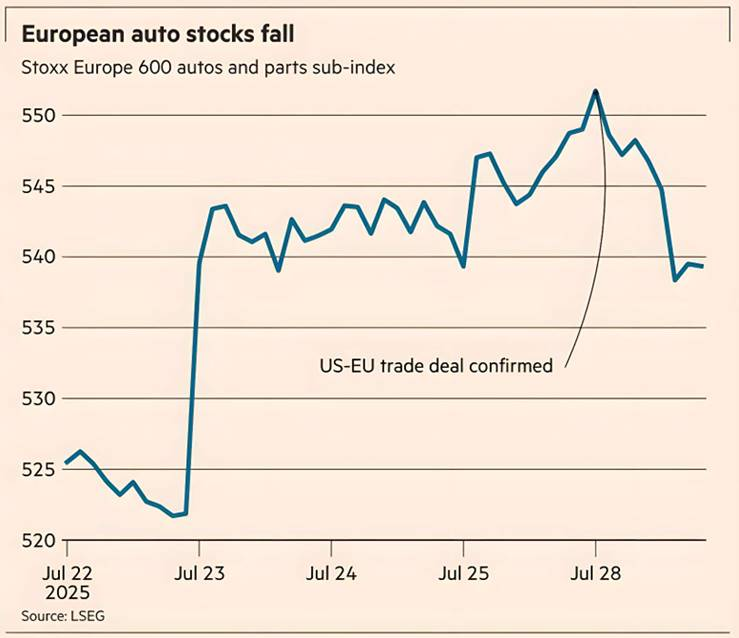

European stocks slipped yesterday after an initial positive reaction to the US-EU trade deal melted away and investors turned their focus to the negative growth impact of the agreed tariffs.
The US and the EU reached an agreement on Sunday in which the European bloc will face a tariff of 15 per cent on its exports to the US. The EU has also agreed to spend hundreds of billions of dollars on US energy products and weapons.
The Stoxx Europe 600 index, which captures large-cap stocks across the continent, reached its highest level since late March — before Trump’s so-called “liberation day” announcement — rising as much as 0.9 per cent at the open. But those gains faded through the day and the index closed 0.2 per cent down. Frankfurt’s Xetra Dax fell 1.1 per cent.
Technology stocks gained, however, as investors registered their relief that semiconductors would face zero tariffs. Chipmakers ASML and BE Semiconductor Industries both closed more than 4 per cent higher.
Auto stocks fell, despite tariffs on the sector being reduced from 27.5 per cent to 15 per cent under the new deal. A sub-index of the Stoxx Europe 600 containing auto companies closed 1.8 per cent lower. Shares in Volkswagen fell 3.6 per cent, BMW dropped 3.3 per cent and Mercedes-Benz fell 3.2 per cent.
The euro posted its second-biggest single-day decline of the year so far, falling 1.1 percent against the dollar. The dollar rose 0.9 per cent against a basket of other currencies. Wall Street stocks moved slightly higher, with the S&P 500 up 0.1 per cent and the Nasdaq Composite up 0.3 per cent.
Asian stocks broadly gained but Tokyo’s Topix index retreated 0.7 percent after notching up fresh records last week following the announcement of a US- Japan trade deal. Emily Herbert